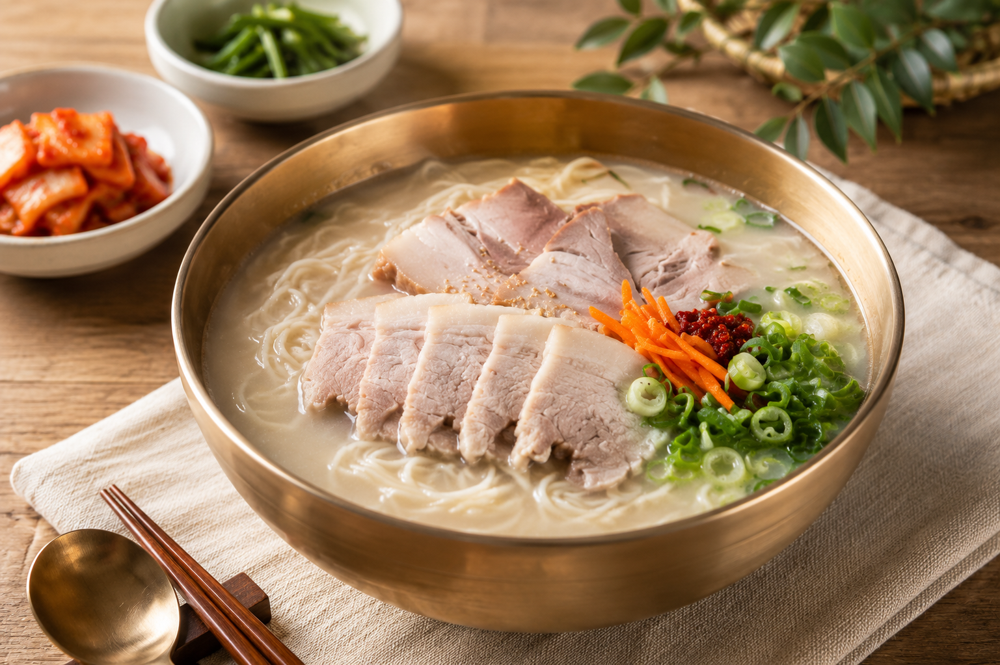
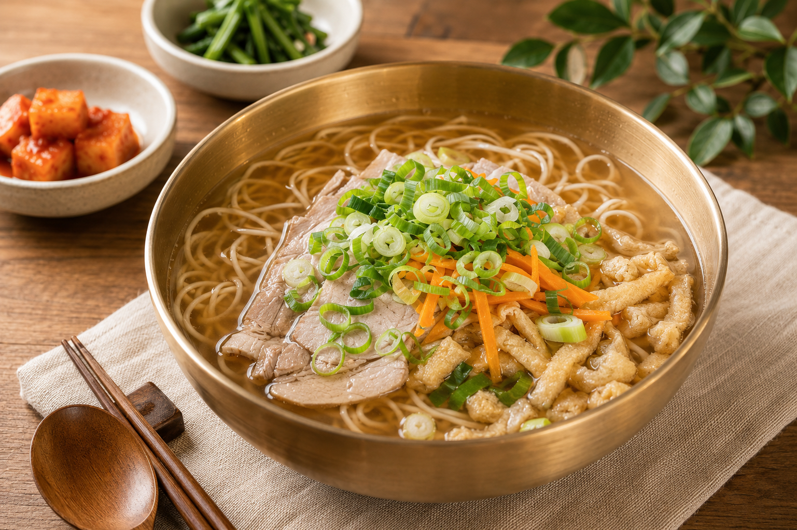
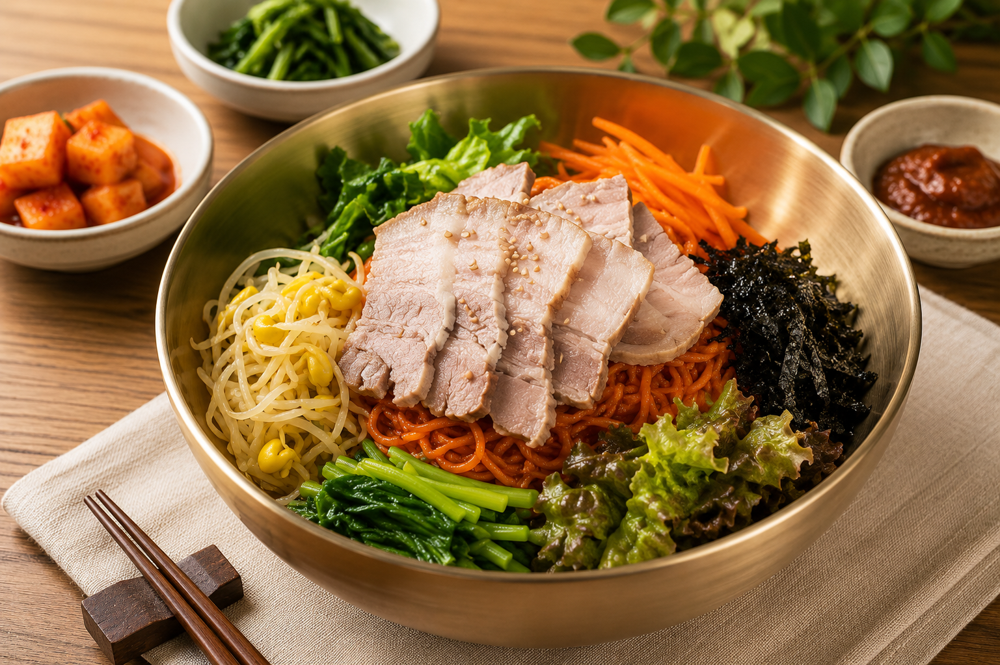
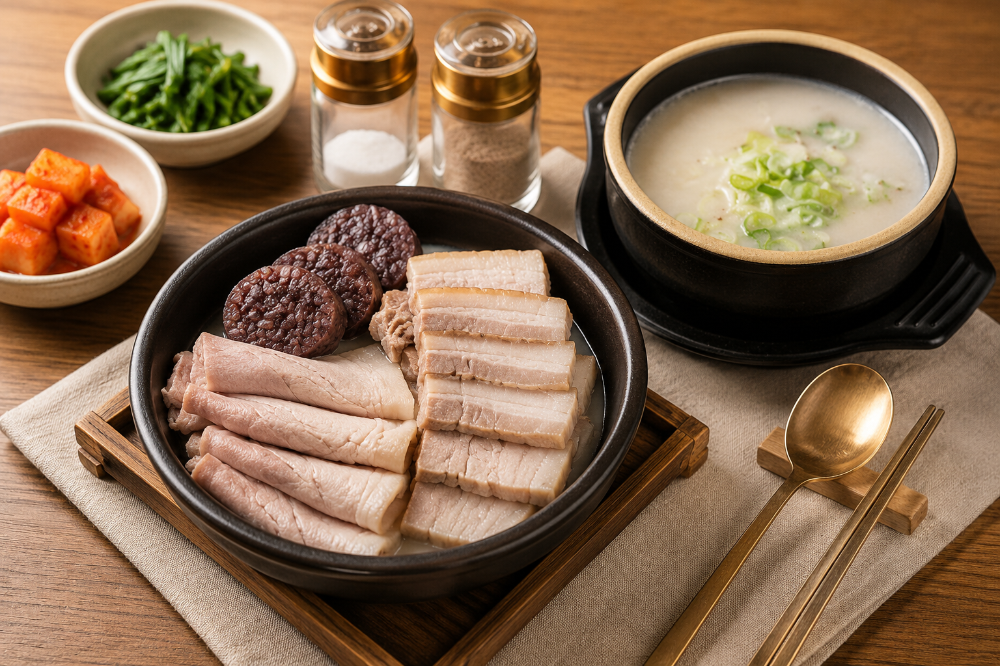
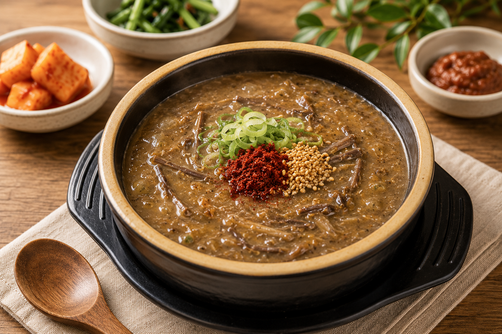
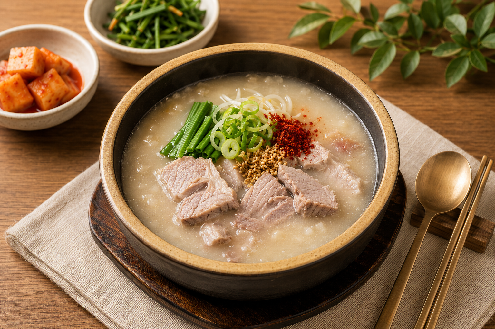
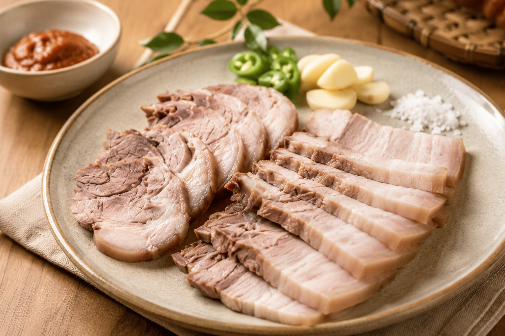

고기국수
JEJU NOODLE제주 돼지고기의 깊은 맛과 따뜻한 육수
JEJU STORY
한라산 아래,
제주의 시간을 담아
따뜻한 한 그릇을 준비합니다.
여행의 하루가
오래 기억될 수 있도록.
JEJU MENU
제주 돼지고기의 깊은 맛과 따뜻한 육수

제주 전통 방식 그대로 삶아낸 부드럽고 담백한 제주 돼지고기

제주 고사리의 깊은 풍미와 진한 육수가 어우러진 한 그릇
JEJU MOMENT
한라산 아래에서 만나는
따뜻한 한 그릇.
1100 GOJI의 한 끼는
여행을 오래 기억하게 합니다.
JEJU ROUTE
제주를 맛보다.
1100 GOJI.
1100 GOJI MENU

제주 돼지고기의 깊은 맛과 따뜻한 육수

멸치육수와 제주 돼지고기가 어우러진 깊은 맛

제주의 맛을 산뜻하게 즐기는 비빔국수

따뜻한 밥과 함께 즐기는 부드러운 제주 돼지고기

제주 고사리의 깊은 풍미와 진한 육수

든든하게 즐기는 제주식 돼지국밥

제주 전통 방식 그대로 삶아낸 담백한 돼지고기